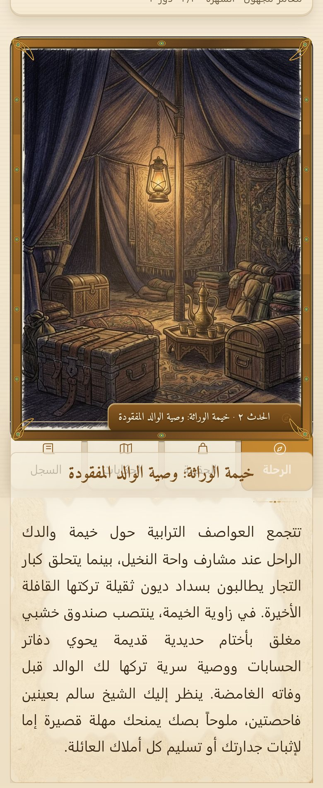
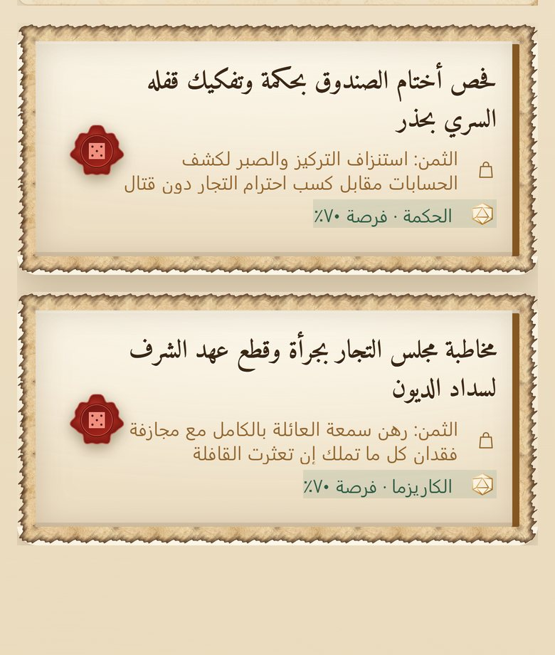

لعبة مغامرات نصية عربية: كل اختيار يفتح مساراً ويغلق آخر.
سبع بدايات: ابن القافلة، تلميذ المعبد، كاتب العدل، الجنديّ الفارّ، ابن الأزقة، العشّاب، أو مغامر حرّ بلا خلفية.
ستّ سِمات تُثقل شخصيتك: فطِن، صَلْب، مُتحدّث، خفيف اليدين، مولود تحت نجم، حافظ الحكايات.
كل حدث: مشهد مصوَّر ونص سردي، ثم خيارات يظهر معها ثمنها وفرصة نجاحها.
الصحة والعقل والذهب والشهرة والسمات تتراكم مع كل قرار، وتسير معك في الرحلة.

